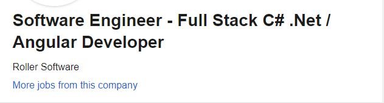
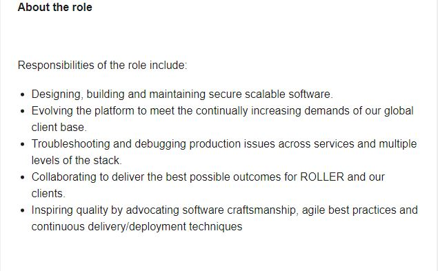

When it comes to a ‘dream job’ or an end goal mine would have to be a Software Engineer. Software Engineers develop and build computer systems and applications softwares like the ones we use everyday. An example of one of these applications would be Microsoft, the operating system mostly used across the world.
Here I have a link to a SEEK job advertisement for a Software Engineer position. As well as some pictures in case the advertisement is down.
 The position for this business is to design and build scalable software that can evolve to meet the increasing demands of a global client base, as well as troubleshoot and debug issues when they arise. After looking into the business (ROLLER) it appears to be for software related to attraction and entertainment venues like AdventurePark. The position is appealing as they deal with a large variety of hardware/software such as self-serve kiosks, RFIDs, gift cards, etc. As well as their large repertoire of businesses they have signed with making them a reliable company.
In terms of the skills and qualifications needed, one needs to have knowledge in multiple programming languages like C# .Net / .Net Core / Web API and more as well as a relevant bachelor's degree and 3+ years in the relevant work field, such as IT or Computer Science. I currently have none of these skills.
In order to get these skills I will study hard to finish a bachelor’s of IT, where that may be enough to get an entry level programming job so that I could gain the experience to work with this particular business.